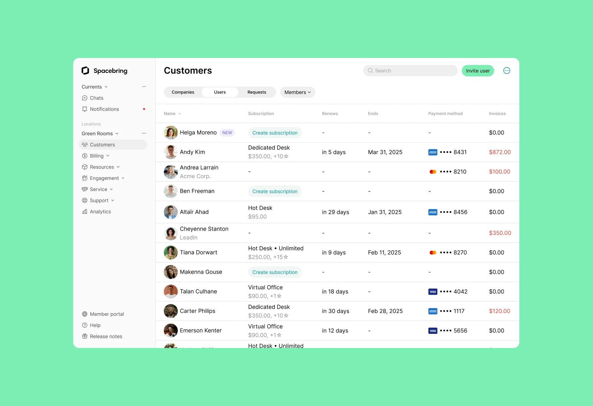
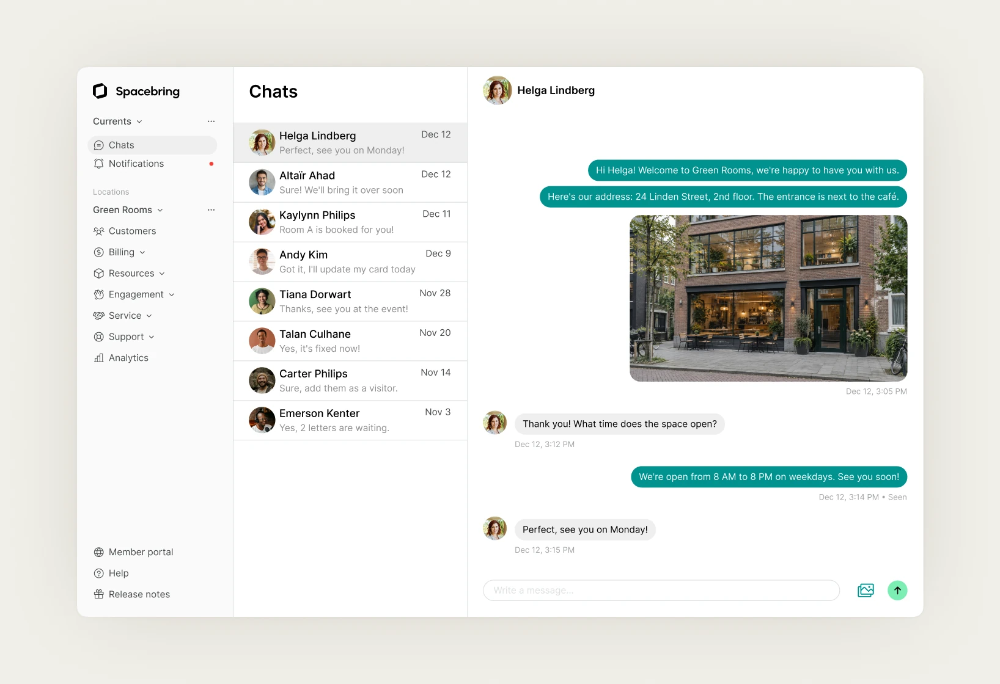

Building a dedicated admin platform for Spacebring
- Role
- UI/UX designer
- Scope
- Web app, design system
- Year
- 2025
- Launch
- Visit blog announcement

Overview
Spacebring is a coworking management platform that helps operators automate bookings, billing, access control, customer management, events, and community engagement from one place.
As a UI/UX Designer, I was responsible for designing the admin platform used by coworking operators and community managers. My work focused on creating intuitive workflows for managing customers, desks, visitors, events, community feed, chat, and the in-app shop, while building a scalable library of reusable components that kept the experience consistent across the product.
Challenge
Spacebring originally had a single product that served both coworking members and workspace operators. As the platform grew, this approach became harder to scale because admins and members had completely different goals, workflows, and levels of complexity.
The challenge was to separate the experience into two dedicated products: one app for coworking members and a new admin platform built specifically for operators to manage their spaces.
At the same time, the new admin app needed to feel unmistakably like Spacebring. The goal was to introduce a more complex, operations-focused interface while preserving the existing visual identity through typography, colors, spacing, and reusable UI patterns, making the transition familiar for existing customers.
Approach
I started by understanding how admins manage a space on a daily basis and translated those workflows into a dedicated product structure, separate from the member experience.
The platform was designed feature by feature, covering customers, desks, visitors, events, chat, the community feed, and the shop. Throughout the project, I focused on keeping navigation simple, reducing complexity in data-heavy screens, and making recurring actions feel consistent across the product.
Alongside the dashboard, I built a reusable component system based on Spacebring’s existing visual language. Using the same typography, color palette, spacing, and UI patterns helped the new admin platform feel like a natural extension of the Spacebring ecosystem while making future product updates faster and more consistent.

Outcome
The new admin platform launched as a dedicated workspace for coworking operators, separating complex admin workflows from the member experience.
One of the key outcomes of the project was creating a reusable design system that became the foundation for future product development. It was later used to design and scale new pages and features across the Spacebring product while keeping the interface consistent.